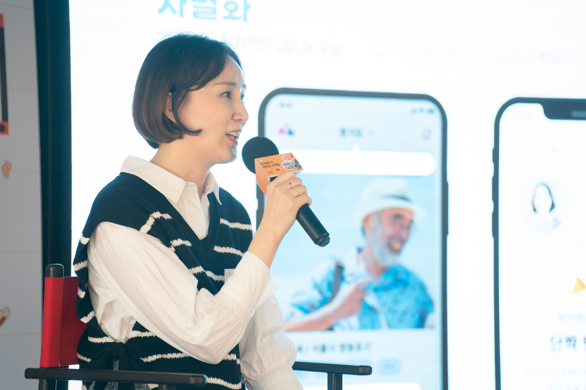

SINOR CAREERS연결을 넘어,
삶을 바꾸는 일.
우리가 만드는 변화의 다음 장을
당신과 함께 쓰고 싶습니다.
함께할 포지션 살펴보기 사용자의 오늘을 이해하고,
가능한 방법을 찾고,
함께 변화를 만들어갑니다.
당신의 일이 누군가의 더 나은 일상이 되도록.WHY SINOR
사람을 연결하면,
일상이 달라집니다.
시놀은 사람 간의 연결을 넘어
유의미한 삶의 변화를 만들어갑니다.
‘인생 하반기 건강한 에이징을 위해’라는 사명 아래,
라이프 웰니스와 소셜 엔터테인먼트를 개발하는 소셜벤처입니다.
고령화와 1인 가구 증가라는 변화 속에서
함께할 사람, 새로운 경험, 도전하는 일상의 가능성을 넓힙니다.
회사소개 HOW WE WORK잘하는 사람들이,
더 잘할 수 있는 팀.
시놀 팀은 네 가지 핵심가치로 움직입니다.
Social Impact사회적 임팩트
고객 만족을 최우선으로 생각하며, 애자일한 협업을 추구합니다.
Illogical Advance유리한 무리수
빠르고 과감하게 실험하고, 성공을 효과적으로 반복합니다.
Professionalism프로다움
일은 프로페셔널하게, 실력으로 말합니다.
Growth Mindset성장 마인드
같이 일하는 즐거움과 서로에게 배울 수 있는 동료를 소중히 여깁니다.
자율과 책임자신의 일은 스스로 구상하고 결정합니다.
맡은 업무에 높은 책임감과 자율성을 갖고 일합니다.
수평적으로 소통하고, 서로에게 배우며 더 나은 방법을 찾습니다.
MAKE AN IMPACT우리가 만든 서비스가
누군가의 오늘이 되니까.
화면 안의 연결이 일상 밖의 변화로 이어지는 현장.
시놀은 사람을 위한 기술과 경험을 만들어갑니다.

시놀의 이야기를 전하는 자리 더 많은 사람과 만나는 현장
더 많은 사람과 만나는 현장GROW WITH US
몰입하는 당신을 위한
든든한 지원.
자율적으로 일하고, 함께 배웁니다.
- 선택적 출근 및 개취 존중 자율 복장
- 정시 퇴근 지향, 회식 및 야근 강요 없음
- 연 1회 휴가비 20만원 지원
- 자유로운 연차휴가 사용
- 교육 참가 (헬스케어, 마케팅, 자기계발 등)
- 분기별 1회 워크숍 (영화, 취미활동, 봉사활동 등)
일에 몰입할 수 있는 환경을 만듭니다.
- 역량에 맞는 연봉 지원, 1년마다 연봉 협상
- 우수사원 포상, 스톡옵션 제도
- 3/6/9년 만근 시 리프레쉬 휴가
- 야근 식대 지원
- 자기개발 교육 지원 (인프런, 베어유, 클래스101, 스터디파이, 패스트캠퍼스 등)
- 수면실, 웰니스존, 샤워실 이용 가능
- 인재 추천 채용 인센티브 제공 (최대 100만원 지급)
일 밖의 일상도 소중하니까요.
- 연 1회 종합 건강검진
- 임직원 및 지인 자사 서비스 할인
- 생일 축하 이벤트
- 설날, 추석 명절 선물 지급
- 경조사비 및 경조 휴가 지원 (결혼 화환, 출산 과일바구니 제공)
- 임직원 복지 플랫폼 (여행, 숙박, SK Benepia 임직원특가몰 등)
- 취미생활 할인 (민병철유폰, 시원스쿨, 밀리의서재 등)
- 피트니스웨어/운동용품 할인
- 여기어때, 샬레코리아, agoda, 쏘카 등 할인
OUR NEXT TEAMMATE
이런 동료를
기다립니다.
- 01헬스케어와 소셜 엔터테인먼트 분야에 관심이 높은 분
- 02반짝이는 아이디어가 샘솟는 분
- 03수평적 커뮤니케이션을 즐기는 분
- 04가능한 방법을 찾는 분
- 05프로의식과 추진력으로 스스로를 발전시키는 분
FIND YOUR ROLE시놀의 다음을
함께 만들어갈 자리.
관심 있는 포지션을 눌러 상세 내용을 확인해 주세요.
모집 여부와 상세 일정은 채용 문의를 통해 확인해 주세요.
YOUR JOURNEY합류까지의 여정.
채용팀에서 서류 심사 후 개별 면접 연락을 드립니다.
- 01
지원서 작성
- 02
서류 전형
- 03
면접 진행
1~2회
- 04
최종 합격
기술직군은 기술 테스트가 추가됩니다.
포지션에 따라 연봉 협상 및 입사일 조정을 거칩니다.
시놀 오피스서울시 영등포구 의사당대로 83, 8층
여의도역 3번 출구 · 주차 무료 30분, 이후 유료
지도 보기 의미 있는 변화를,
함께 만들어갈 당신에게.
채용 문의하기